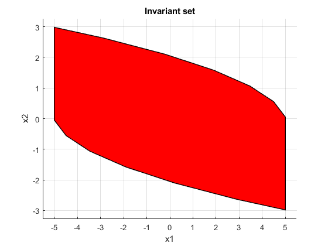
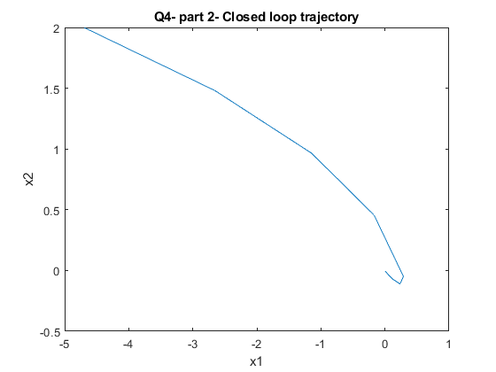
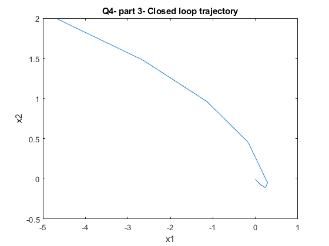
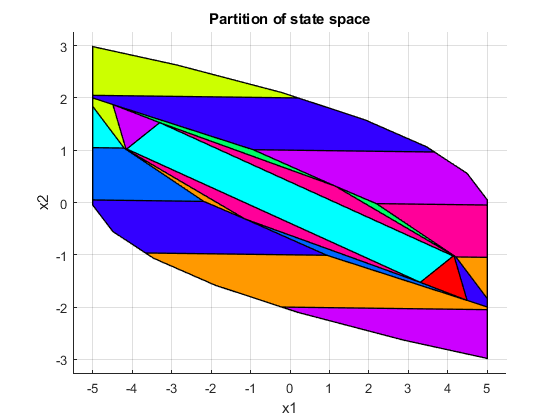

Contents
HW 7 Question 4
clc clear all close all dbstop if error
Question 1
A = [0.99 1;
0 0.99];
B = [0;1];
% computes a control invariant set for LTI system x^+ = A*x+B*u
system = LTISystem('A', A, 'B', B);
system.x.min = [-5; -5];
system.x.max = [5; 5];
system.u.min = -0.5;
system.u.max = 0.5;
Xf = system.invariantSet();
Xf.plot()
xlabel('x1')
ylabel('x2')
title('Invariant set')
% Compute a terminal cost from the Lyapunov equation
Q =[1 0;
0 1];
R =1;
PN = dlyap(A',Q);
Iteration 1... Iteration 2... Iteration 3... Iteration 4... Iteration 5... Iteration 6... Iteration 7...
Question 2
Create an online MPC controller
clear system tic system = LTISystem('A', A, 'B', B); system.x.min = [-5; -5]; system.x.max = [5; 5]; system.u.min = -0.5; system.u.max = 0.5; Xf = system.invariantSet(); system.x.penalty = QuadFunction(Q); system.u.penalty = QuadFunction(R); system.x.with('terminalSet'); system.x.terminalSet = Xf; system.x.with('terminalPenalty'); system.x.terminalPenalty = QuadFunction(PN); x0 = [-4.7;2]; N = 4; mpc = MPCController(system, N); [u, feasible, openloop] = mpc.evaluate(x0) loop = ClosedLoop(mpc, system); data = loop.simulate(x0, 30); onlineTime = toc; % Plot trajectory figure plot(data.X(1,:),data.X(2,:)) title('Q4- part 2- Closed loop trajectory') xlabel('x1') ylabel('x2')
Iteration 1...
Iteration 2...
Iteration 3...
Iteration 4...
Iteration 5...
Iteration 6...
Iteration 7...
u =
-0.5000
feasible =
logical
1
openloop =
struct with fields:
cost: 40.8544
U: [-0.5000 -0.5000 -0.5000 -0.4539]
X: [2×5 double]
Y: [0×4 double]
 Question 3
clear system clear mpc tic system = LTISystem('A', A, 'B', B); system.x.min = [-5; -5]; system.x.max = [5; 5]; system.u.min = -0.5; system.u.max = 0.5; Xf = system.invariantSet(); system.x.penalty = QuadFunction(Q); system.u.penalty = QuadFunction(R); system.x.with('terminalSet'); system.x.terminalSet = Xf; system.x.with('terminalPenalty'); system.x.terminalPenalty = QuadFunction(PN); x0 = [-4.7;2]; N = 4; mpc = MPCController(system, N); expmpc = mpc.toExplicit(); [u, feasible, openloop] = expmpc.evaluate(x0) loop = ClosedLoop(expmpc, system); data2 = loop.simulate(x0, 30); explicitTime = toc; % Plot trajectory figure plot(data2.X(1,:),data2.X(2,:)) title('Q4- part 3- Closed loop trajectory') xlabel('x1') ylabel('x2')
Iteration 1...
Iteration 2...
Iteration 3...
Iteration 4...
Iteration 5...
Iteration 6...
Iteration 7...
mpt_plcp: 33 regions
u =
-0.5000
feasible =
logical
1
openloop =
struct with fields:
cost: 40.8544
U: [-0.5000 -0.5000 -0.5000 -0.4539]
X: [2×5 double]
Y: [0×4 double]
partition: 1
region: 8
 Question 4
Table the two execution times
names = {'Online controller';'Explicit controller'};
times = {onlineTime; explicitTime};
T = cell2table([names, times],'VariableNames',{'Controller','ExecutionTime'})
T =
2×2 table
Controller ExecutionTime
_____________________ _____________
'Online controller' 2.6131
'Explicit controller' 0.93478
Question 5
figure expmpc.partition.plot() title('Partition of state space') xlabel('x1') ylabel('x2')